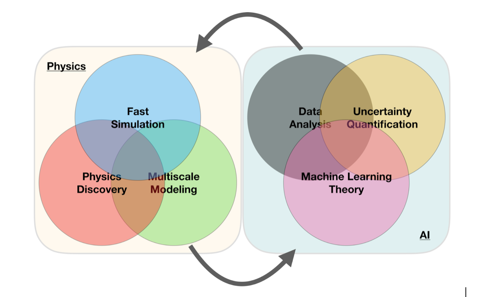

The program is a collaboration between seven departments and classical disciplines:
The program is multidisciplinary and everbody who has completed undergraduate studies in science and engineering, with a sufficient quantitative background, is eligible. The language of instruction is Norwegian and/or English.
Scientific computing focuses on the development of predictive computer models of the world around us. As study of physical phenomena through experimentation has become impossible, impractical and/or expensive, computational modeling has become the primary tool for understanding—equal in stature to analysis and experiment. The discipline of scientific computing is the development of new methods that make challenging problems tractable on modern computing platforms, providing scientists and engineers with key windows into the world around us.
Data science focuses on the development of tools designed to find trends within datasets that help scientists who are challenged with massive amounts of data to assess key relations within those datasets. These key relations provide hooks that allow scientists to identify models which, in turn, facilitate making accurate predictions in complex systems. For example, a key data science goal on the biological side would be better care for patients (e.g., personalized medicine). Given a patient’s genetic makeup, the proper data-driven model would identify the most effective treatment for that patient.
A specific aim of this program is to develop your ability to pose and solve problems that combine insights from a specific discipline with mathematical tools and computational skills. This provides a unique combination of applied and theoretical knowledge and skills. These features are invaluable for the development of multi-disciplinary educational and research programs. The main focus is not to educate computer specialists, but to educate students with a solid understanding in basic science as well as an integrated knowledge on how to use essential methods from computational science. This requires an education that covers both the specific disciplines like physics, biology, geoscience, mathematics etc with a strong background in computational science.
A significant aspect of this program is the ability to offer new educational opportunities that are aligned with the needs of a 21st century workforce. Many companies are seeking individuals who have knowledge of both a specific discipline and computational modeling.
In this program you learn to use the computer as a laboratory for solving problems in science and engineering. The program offers exciting thesis projects from many disciplines: biology and life science, chemistry, mathematics, informatics, physics, geophysics, mechanics, geology, computational finance, computational informatics, b ig data analysis, digital signal processing and image analysis – you select research field according to your interests.
A Master’s degree from this program gives you a methodical training in planning, conducting, and reporting large research projects, often together with other students and university teachers. The projects emphasize finding practical solutions, developing an intuitive understanding of the science and the scientific methods needed to solve complicated problems, use of many tools, and not least developing own creativity and independent thinking. The thesis work is a scientific project where you learn to tackle a scientific problem in a professional manner. The program aims also at developing a deep understanding of the role of computing in solving modern scientific problems.
From this program you gain deep insights in the fundamnetal role computations play in our advancement of science and technology, as well as the role computations play in society.
While discipline-based master's programs tend to introduce very strict requirements for specific courses, we believe in adapting a computational thesis topic to the student's background, thereby opening up for students with a wide range of bachelor's degrees. A very heterogeneous student community is thought to be a strength and unique feature of this program.
The thesis projects will be tailored to your needs, wishes and scientific background. The projects can easily incorporate topics from more than one discipline. Many of the master thesis projects have advisors from more than one department.
Candidates who are capable of modeling and understanding complicated systems in natural science, are in short supply in society. The computational methods and approaches to scientific problems students learn when working on their thesis projects are very similar to the methods they will use in later stages of their careers. To handle large numerical projects demands structured thinking and good analytical skills and a thorough understanding of the problems to be solved. This knowledge makes the students unique on the labor market.
Career opportunities are many, from research institutes, universities and university colleges and a multitude of companies. Examples include IBM, Hydro, Statoil, and Telenor. The program gives an excellent background for further studies, with a PhD as one possible goal.
The program has also a strong international element which allows students to gain important experience from international collaborations in science, with the opportunity to spend parts of the time spent on thesis work at research institutions abroad.
The goal of CCSE is to integrate computing as a natural tool in basic educations, to make the education research near and to prepare students for an interdisciplinary workplace.
The center will function as our coordintaing unit for common scientific and social activities.
Location: fourth floor, eastern wing of the Physics building.
This newly establised center is taylored to innovative research on Computational Science and Data Science and coordinates research and educational activities in the these fields. Look up the above weblink for more information.
If you wish to have a critical read on AI/ML from a societal point of view, see Kate Crawford's recent text Atlas of AI
Here: with AI/ML we intend a collection of machine learning methods with an emphasis on statistical learning and data analysis
An important and emerging field is what has been dubbed as scientific ML, see the article by Deiana et al Applications and Techniques for Fast Machine Learning in Science, arXiv:2110.13041
The authors discuss applications and techniques for fast machine learning (ML) in science – the concept of integrating power ML methods into the real-time experimental data processing loop to accelerate scientific discovery. The report covers three main areas
Machine learning is an extremely rich field, in spite of its young age. The increases we have seen during the last three decades in computational capabilities have been followed by developments of methods and techniques for analyzing and handling large date sets, relying heavily on statistics, computer science and mathematics. The field is rather new and developing rapidly.
Popular software packages written in Python for ML are
and more. These are all freely available at their respective GitHub sites. They encompass communities of developers in the thousands or more. And the number of code developers and contributors keeps increasing.
Not all the algorithms and methods can be given a rigorous mathematical justification, opening up thereby for experimenting and trial and error and thereby exciting new developments.
A solid command of linear algebra, multivariate theory, probability theory, statistical data analysis, optimization algorithms, understanding errors and Monte Carlo methods is important in order to understand many of the various algorithms and methods.
Job market, a personal statement: A familiarity with ML is almost becoming a prerequisite for many of the most exciting employment opportunities. And add quantum computing and there you are!
The approaches to machine learning are many, but are often split into two main categories. In supervised learning we know the answer to a problem, and let the computer deduce the logic behind it. On the other hand, unsupervised learning is a method for finding patterns and relationship in data sets without any prior knowledge of the system. Some authours also operate with a third category, namely reinforcement learning. This is a paradigm of learning inspired by behavioural psychology, where learning is achieved by trial-and-error, solely from rewards and punishment.
Another way to categorize machine learning tasks is to consider the desired output of a system. Some of the most common tasks are:
The large amount of degrees of freedom pertain to both theory and experiment in the physical sciences. With increasingly complicated experiments that produce large amounts data, automated classification of events becomes increasingly important. Here, deep learning methods offer a plethora of interesting research avenues.
Almost every problem in ML and data science starts with the same ingredients:
We seek to minimize the function \( \mathcal{C} (\mathbf{x}, f(\mathbf{\alpha})) \) by finding the parameter values which minimize \( \mathcal{C} \). This leads to various minimization algorithms. It may surprise many, but at the heart of all machine learning algortihms there is an optimization problem.